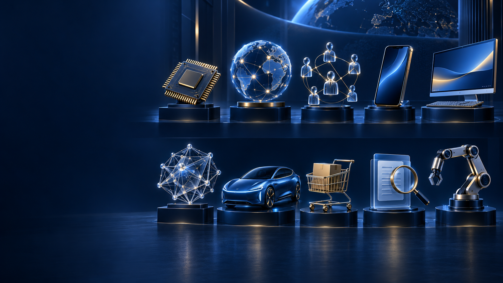

从创意人才
到 AI 创新者
From Creative Talent to AI Innovators
王林 Lincoln
From Creative Talent to AI Innovators
王林 Lincoln
MindsLeap 心智悦动创始人
Founders Space China CEO

Global breakthroughs. Silicon Valley innovation.
硅谷，把技术变成
产品与产业。
Design connects technology with business.
Barry Katz 给我的启发
An idea can become a world.
Creative vision can reach the screen.
A playable prototype makes an idea testable.
A visual world can find its own sound.
A shorter path from idea to impact.
Judgment gives capability a direction.
Context Advantage begins with what you notice.
未来人才的机会：理解情境，补全上下文。
A venture needs more than a compelling prototype.
机会，出现在三个问题的交汇处。
Build locally. Learn across cultures.
真实项目 跨专业协作 跨文化验证
You can outsource your thinking,
but you can't outsource your understanding.